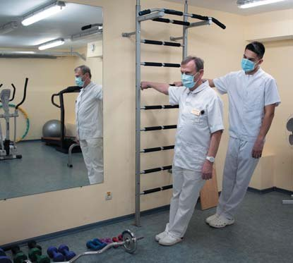
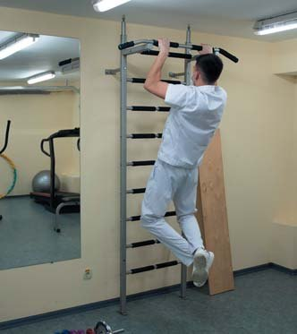

Здоров'я стоматолога · журнал «ДентАрт» 2021 №2
Про синдром емоційного вигорання. Частина I
ABOUT EMOTIONAL BURNOUT SYNDROME. PART 1
Я не психолог, не психіатр і не нейробіолог, однак уже багато років збираю і вивчаю наукову інформацію про те, що і як знищує наші очікування, або чому стається емоційне вигорання – burnout.
Ви ходите на роботу, або працюєте дистанційно, або виховуєте своє довгоочікуване дитя. Ви власник великого бізнесу, або приватний підприємець і маєте свою справу, або найманий працівник. Ви живете в мегаполісі, або невеликому місті, або в маленькому селищі.
Незважаючи на очевидні відмінності, є щось, що здатне затьмарити наше життя. Воно зробить це всупереч нашій волі, і ми не будемо раді тому, що сталося.
У якийсь момент ми відчуємо спустошення. У грудях утвориться величезна чорна діромаха, в якій пропаде все важливе і значуще для нас.
Потім ми втратимо інтерес до того, що із задоволенням робили раніше, і навіть саме задоволення, яке ми отримували в минулому, стане міражем. Ми щохвилини почнемо ставити собі запитання: чи справді було колись добре? Чи не обманюю я себе, коли згадую про це? Можливо, ніколи і не було добре...
Колеги і пацієнти/клієнти починають викликати тільки злість і роздратування. У голові оселяється думка, що я нічого не значу і зайнятий якоюсь нісенітницею. Усе це отруюватиме життя до тих пір, доки мозок повністю не просякнеться цією отрутою.
Такий стан і називається емоційним вигоранням. Нейробіологи і фахівці в галузі психології виробничих процесів досліджують цей феномен уже кілька десятиліть і виділяють три основні компоненти в синдромі емоційного вигорання:
- Емоційне виснаження, яке супроводжується втратою енергії та мотивації. Нам стає нецікаво робити те, від чого раніше горіли очі, те, що нас надихало.
- Деперсоналізація, яка виявляється в негативному ставленні до пацієнтів/клієнтів та колег. Люди, з якими ми спілкуємося на роботі, перестають бути для нас людьми в глибинному розумінні цього слова. Ми починаємо спілкуватися з функціями і завданнями. Людей більше не залишається.
- Зниження особистої ефективності, зокрема оцінка себе як поганого фахівця і знецінення власної роботи. Несподівано ми відчуваємо малу цінність або повну безглуздість наших старань. Наша праця не приносить користі, а відтак наше існування не має сенсу.

Якщо, читаючи ці рядки, ви впізнаєте себе, то важливо запитати себе: «Як же я опинився/опинилася у цьому стані?» і спробувати знайти відповідь. Знаючи дорогу в один бік, ми зможемо знайти дорогу назад.
Перше важливе розуміння: коли мова йде про емоційне вигорання – це взагалі не про втому! Це не про ляж поспи, або візьми відпустку, або поміняй картинку/роботу/чоловіка/квартиру/країну. Доречно нагадати, що окремо класифікується батьківське вигорання, проте «поміняй дітей» – не поширена рекомендація.
Коли мова йде про емоційне вигорання – це про емоційне виснаження, коли згорають від постійної напруги і хронічних стресів, безсило зависаючи між перешкодами.
Отже, перша важлива причина емоційного вигорання лежить у площині наших очікувань, наших потаємних думок, які ми не тільки не висловлюємо вголос, але часто й самі не усвідомлюємо до кінця.
Налаштування людського мислення, пов'язані з очікуваннями, називаються настановами повинності, тобто це наші напівусвідомлені уявлення про те, яким ПОВИНЕН бути навколишній світ і за якими правилами він ПОВИНЕН працювати, що б не сталося. Таким чином, центральною ідеєю є ідея обов'язку, а саме слово «повинен» майже завжди є вербальною і ментальною пасткою.
«Повинен» – це означає тільки так і не інакше, без альтернативи. Однак таке означення ситуації справедливе лише у виняткових випадках. Наприклад, «людина повинна їсти», бо нам точно відомо, що без їжі певного складу життя немає.
Однак у світі людських взаємин не існує безальтернативних правил. Нам еволюція нічого не гарантувала первісно. Хіба що смерть. Ми живемо у світі ймовірностей і невизначеностей, а успіх людини залежить від того, наскільки вона здатна витримати невизначену мінливість зовнішнього світу.
Щоб знизити ймовірність вигорання, потрібно зрозуміти, від яких настанов «я повинен» слід відмовитися.
Перша пастка мислення — ілюзія всемогутності
Щоразу, коли ми починаємо нову справу або ставимо перед собою нову мету, ми прагнемо досягти якогось запланованого результату і, звичайно, очікуємо від себе успіху. У таких випадках настанова повинності звучить як «Я завжди повинен досягати успіху» або «Я повинен вилікувати всіх пацієнтів». Ми думаємо, що наші дії ПОВИННІ принести очікуваний/бажаний результат, і по-іншому бути не може. Це і є перша пастка, яка веде до вигорання.
У крайній формі очікування успіху перетворюється на очікування успіху абсолютного і постійного. Однак це дві різні настанови: перша має на увазі прагнення до результату, друга – що будь-який результат, окрім успіху, оцінюється як невдача і поразка. Навіть якщо ми не визнаємо це вголос, то наодинці із собою і майже несвідомо ми думаємо, що успіх – це єдино можливий результат наших дій і жоден інший неприйнятний.
Якщо ж успіху не досягнуто, ми відчуваємо розчарування в собі, злість на себе, бо мозок прив'язує успіх до дій тіла.
Відомий афоризм «планувати розумно, дотримуватися плану безглуздо» саме про те, що життя багатогранне і зовнішні умови весь час змінюються. Ми можемо вибудувати дуже продуманий план дій і навіть записати його в блокнот, проте мінливі зовнішні умови і реальність постійно втручатимуться в цей план і вимагатимуть зміни тактики досягнення мети. Опір змінам або ігнорування нових факторів неминуче призведе до помилок, страждання від них і стресу.
Уявіть, що ви встановлюєте імплантат за шаблоном, і раптом направляючий циліндр виявляється в проєкції під'язикової слинної залози або свердло провалюється у нижньощелепний канал. Так ось, зовсім неважливо, помилилися ви чи помилка при зіставленні даних – імплантат краще взяти коротший, а не намагатися ним заблокувати кровотечу чи взагалі проігнорувати шаблон.
Завжди будьте готові до того, що початковий план зажадає змін. Запасіться терпінням і розвивайте гнучкість мислення. Учіться змінюватися й адаптуватися до мінливих обставин. Гранітна куля тверда і навіть здається міцною, проте варто її впустити на підлогу, і вона розіб'ється. Пружна силіконова кулька відскочить і буде у грі з вами далі.
Пам'ятайте, що початкові цілі можна, а часто і треба міняти. Саме гнучкість цілей стане запорукою успіху вашого проєкту.
Друга пастка мислення — почуття провини
N. B. Успіх вашого проєкту залежить не тільки особисто від вас!!!
Багато хто з нас виховувався у настанові «ти відповідаєш за все, що відбувається». Наприклад, ви звичайна дитина і, гуляючи, порвали одяг або розлили чай/розбили тарілку... Зазвичай обвинувачувальна реакція батьків така, ніби ви саме такого результату хотіли і зробили так спеціально. Подібне виховання формує, з одного боку, розширену до нереальних обсягів відповідальність, з другого – почуття провини. Саме тому й формується ілюзія всемогутності, проте міцно пов'язана з почуттям провини. Почуття провини, у свою чергу, пов'язане в нашому мозку з почуттям страху, який незримо присутній у багатьох у комунікаціях і виникає щоразу, коли щось, що перебуває в зоні нашої відповідальності, але по-справжньому непідконтрольне нам, іде не так.
Важливо розуміти і пам'ятати, що дії та емоції інших людей (ваших батьків, дорослих дітей, співробітників, пацієнтів і т. д.) нам не підвладні, якими б soft skills ви не володіли.
Якщо ви вважаєте інших людей зоною своєї і лише своєї відповідальності, на вас чекають провал і програш. З таким мисленням ви приречені на постійну незадоволеність своєю справою, на хронічний стрес і неминуче вигорання.
Якщо думати, що успіх на 99,9% залежить тільки від вас, то ви вигорите.
І ви вигораєте, але спочатку зависаєте в хронічному стресі між відповідальністю, виною, страхом та емоційним болем.
Як дізнатися, що ви вже зависли? Наприклад, сьогодні ви прокинулися у гарному настрої. За вікном сонячний день, всесвіт прекрасний, ви почуваєтеся чудово, на дивані і в душі муркочуть котики. Але ви берете в руки телефон, гортаєте стрічку Фейсбуку/Інстаграму і поглядом чіпляєтеся за малозначущий пост від малознайомої людини, і раптом... сонце меркне, ваш світ занурюється в пекло, а котики починають дряпати диван і душу.
Чим старшими ви стаєте, тим більше незначущих речей здатні привести вас до емоційних провалів: коханий чоловік обійняв недостатньо міцно, пацієнт незадоволений кутиком вініра, чорний кіт перейшов дорогу, колега косо подивився, просто щось згадалося і стало сумно... І такий стан триває годинами, потім днями, потім місяцями, і ви розгублені, бо абсолютно не зрозуміло, адже такі ж події не засмучували вас раніше... Ну, кутик вініра, ну покосився колега, ну чорний кіт, – то й що? А те, що малозначущі події викликають емоційний спад і, як снігова куля, ми накопичуємо стільки, що емоційний біль починає обволікати будь-які повсякденні події і формувати хронічний стрес.
Гострий і хронічний стрес
Стрес поділяють на гострий, коли всі реакції тривають обмежений кількома годинами період, і хронічний – тривалістю 24 години і більше.
У фізіологічному сенсі стрес – це реакція на небезпеку. Стрес – це також реакція на все нове, оскільки нова місцевість або незнайомі люди і є в розумінні мозку небезпека. Стрес – це еволюційний захисний механізм, що закріпився як адаптація, як фокусування на цілі, щоб уникнути небезпеки. Мозкові абсолютно не важлива якість сигналу, важливо лише, що сигнал надійшов; чи буде це крижана вода, чи конфліктний колега/пацієнт, чи надзавдання від шефа – реакція мозку однакова: «бий або біжи», тільки в сучасній еволюційній інтерпретації.
Стресова реакція проходить три фази: мобілізація, що виявляється в тривозі, стабілізація або резистентність і постстрес, для якого характерне виснаження усіх ресурсів.
Протягом першої фази виділяється адреналін, глюкокортикоїди, ендорфіни, кортизол... Судини розширюються, тиск скаче, наднирники стимулюють утворення глюкози, розширюються бронхи в легенях, напружуються м'язи, гальмується регенерація клітин, сповільнюється травлення, імунна система дезорієнтована, репродуктивна система взагалі відключається, загострюється і стає тунельною ваша увага. Мабуть, ви помічали, як усе, окрім джерела стресу, перестає мати значення? І якщо взаємодія зі стресором триває (ситуація хронізується) і ви нічого не зробили для адаптації до нього – організм починає буквально вижирати ресурс, який чіпати не можна, і виснажується. Таким чином, гострий стрес збадьорює всі системи, а хронічний – виснажує.
Хронічний стрес передусім впливає на нейрогормональну систему, і головний тут – кортизол, який не лише паралізує волю, а й наполегливо забирає той ресурс, який не можна чіпати. Саме кортизол намагається вас уповільнити й адаптувати до ситуації. Але водночас він же почне розщеплювати білок і м'язи, а ви відчуваєте швидку стомлюваність.
Саме кортизол відповідальний за відсутність вітаміну D, поскільки блокує його біологічну доступність, а вітамін D і так складно отримати, особливо взимку, та ще коли ви, як і я, в офісі або клініці по 12 годин.
Наступний нейромедіатор, про який слід знати, – норадреналін, саме він тримає ваш організм у постійній мобілізації. Виділяючись у симпатичних синапсах, норадреналін, з одного боку, є збудливим і підсилює роботу серця, звужуючи більшість судин, але з другого – це гальмівний нейромедіатор, який розширює бронхи, щоб ми краще дихали, а також гальмує роботу шлунково-кишкового тракту, тому що не час витрачати ресурси на перетравлювання їжі.
Для запуску таких різноспрямованих змін потрібні різні типи рецепторів до норадреналіну – одні активуються при гострому стресі, інші – при хронічному, коли він намагається витратити внутрішній ресурс ваших клітин і тим самим гальмує регенерацію та порушує стабільність роботи самої нервової системи. Потім порушується транспортування кисню в клітини і падає гемоглобін. Розвивається гіпертонія.
Далі норадреналін спільно з адреналіном призводять до регулярного викиду глюкози, що у свою чергу призводить до маніфестації діабету.
Потім на тлі руйнівного кортизолу і постійного викиду глюкози ви почнете швидко набирати вагу. Особливо жінки, поскільки жіноча стать раніше і більше страждає від гормональних порушень (порушення циклу, гормональний дисбаланс і навіть дисплазії та пухлини).
Пам'ять і мигдалина мозку
А тепер її величність Пам'ять і моя улюблена Мигдалина мозку.
Ви пам'ятаєте, як вас підводила пам'ять під час стресу, в найвідповідальніші моменти? Я добре пам'ятаю своє почуття провини у таких випадках і те, як у мене в голові крутилося питання: «Як я могла забути? Це ж очевидно. Я нуль, а не фахівець».
Мигдалина розташована у білій речовині скроневої частки мозку, маленька, до 2-х см, і отримала свою назву через мигдалеподібну форму. Мигдалина завжди на сторожі вашого страху і спільно з лобовою часткою постійно вивчає, що ж із вами може статися. Вона реагує на небезпеку, навіть коли її немає, а в хронічному стресі мигдалина активується взагалі на все і всіх навколо.
Під час гострого стресу мигдалина намагається мобілізувати всі ресурси організму і блокує доступ до довгострокової пам'яті, бо спогади, з точки зору витрат енергії, коштують мозку дуже дорого. І ви тупо не можете пригадати банальні речі. От немає такої інформації в голові. Може, звичайно, і є, але доступу ви туди не отримаєте. Так вирішив ваш мозок!
Під час хронічного стресу кортизол взагалі частково руйнує нейронні зв'язки, і тоді стає складніше переносити короткострокові спогади в довгострокові і важко витягати довгострокові спогади. Якщо ви не пам'ятаєте, що оперували позавчора або чи подзвонили мамі, значить, ви в хронічному стресі.
Якщо дуже узагальнити, то мигдалина відповідає за наші реакції, і еволюційно закріплене її глобальне завдання – менше думати і швидше реагувати. Наприклад, якщо на роботі конфлікт, то мигдалина реагує так, ніби вас убивають, якщо лобова частка не передасть їй сигнал скасування.
У нормальних умовах мигдалина регулює активність усього мозку і саме вона диктує нам ступінь тривожності. Її мета – шукати загрози і бути готовою до несподіваних контактів. Саме вона оцінює ймовірність небезпеки всього нового і непізнаного. Мобілізує тіло. Уникає. Чинить опір або включає агресію.
У спокої мигдалина заспокоює. Це слід запам'ятати, поскільки потім це буде важливо в роботі з вигоранням.
Важливо запам'ятати, що мигдалина ДУЖЕ тригерна і контролюється лобовою часткою, а точніше префронтовою корою.
Наприклад, коли ви ставите перед собою або своїми співробітниками нове завдання, намагайтеся описати його максимально детально і чітко, надайте всі можливі вихідні дані, дайте відповідь на всі питання, бо мигдалина миттєво оцінить ступінь новизни, що дорівнює рівню небезпеки.
Не створюйте ні собі, ні іншим стану неясності, тому що будь-яке недорозуміння активує мигдалину, а вона у свою чергу стрес, агресію і подальший руйнівний ланцюжок.
Піклуйтеся про себе і людей, окреслюючи цілі. Важливо! Поскільки древня еволюційна реакція на стрес у всього живого на Землі – бий або біжи, конче необхідно для завершення циклу стресу дати організмові фізичне навантаження. Якщо стрес регулярний – регулярно хоч трохи навантажуйте себе будь-якою фізкультурою або в крайньому випадку багато і глибоко дихайте. Це дасть сигнал мозку, що ви впоралися і тіло в безпеці. Не так ефективно, як фізкультура/танці/біг/штанга, але все-таки можна завершити цикл стресу і медитацією, банею, сміхом, обіймочками, котиками, собачками... Але фізичні навантаження мозок розуміє швидше.


Ілюзія всемогутності і що робити зі стресом
На завершення цієї частини простежимо наслідки ілюзії всемогутності та з'ясуємо, що робити з подальшим стресом.
Уявіть, що невиліковно хвора близька людина, або ви взяли кредит на розвиток клініки і сталася криза, або звільняється ключовий співробітник, або інша ситуація, яка вам не підвладна і «болить».
Коли ви починаєте про таку ситуацію думати, то вам надовго стає емоційно погано, і це погано тягне за собою три типи негативних наслідків.
Перший тип наслідків – це уникання. Спочатку ви намагаєтеся не думати про це, потім уникаєте спілкування з причинними людьми, потім уникаєте отримання будь-якої інформації про це, будь-яких розмов навіть на схожі теми.
Другий тип наслідків – виникає прихований стрес від будь-яких тригерів.
Наприклад, ви їдете по дорозі і бачите аптеку чи банк. Відбувається неусвідомлена зв'язка: аптека – хвороба – близька людина або банк – кредит – бізнес. Ви не думаєте про близьку людину або кредит у цей момент, але емоційно провалюєтеся, навіть не усвідомлюючи, чому.
Завдяки асоціативним зв'язкам у мозку мислення відбувається одночасно на кількох рівнях, і в цьому випадку – на логічному та на емоційному. На логічному рівні начебто нічого не відбулося, але на емоційному, невербальному рівні – тригер у вигляді аптеки/банку призвів до активації нейромереж, пов'язаних з переживаннями за близьку людину, або у випадку кредиту – про справу всього життя.
Так виникає прихований хронічний стрес, але ви не розумієте, чому, і починаєте його раціоналізувати, згадуючи все, що сталося сьогодні. А сьогодні не було нічого незвичайного – поточні робочі питання, суєта і звичайний побут. Однак мигдалина активізувалася, і ви починаєте поточні питання перебільшувати, глобалізувати і розкручувати до вселенського апокаліпсису (пам'ятаєте, не так обняв, не подзвонив, не похвалив?). Потім ви починаєте думати, як ці проблеми вирішити, щоб не стресувати, але поскільки стрес викликаний не поточними питаннями, він нікуди не йде, а мигдалина вмикає агресію.
Третій тип наслідків – це ментальна анестезія: коли ви не можете заспокоїти мигдалину і побороти стрес, мозок вимагає відволікання у вигляді перегортання Фейсбуку/Інстаграму, переглядів серіалів, погладжування котика чи бурхливого спілкування з друзями.
Мозок вимагає: роби хоч що-небудь, щоб побороти стрес.
Однак все стає ще гірше, бо причина стресу нікуди не поділася і мозок знову зачепиться за щось незначне. Ви знову не знаєте причини стресу. Знову шукаєте причину в поточному або недавньому досвіді, і знову будете втікати через Фейсбук/Інстаграм в анестезію.
Якщо нічого не зробити, кількість стресу в голові з часом наростає, а все погане, що вже відбулося чи незабаром відбудеться, пускає коріння, активуючи мигдалину. У якийсь момент у свій мозок ми додаємо і чужий стрес – наприклад, коли товариш розлучився або втратив роботу, ви починаєте відчувати його стрес і його страхи. Вам це також болить, і ви знову намагаєтеся втекти в анестезію.
Зрештою, коло замикається і життя опиняється у глухому куті, поскільки абсолютно все, що відбувається за межами анестезії, починає викликати біль. Уже будь-який об'єкт у навколишній реальності стає тригером, бо знаходить підходящу зачіпку в скарбничці стресу. І тоді вже й саме життя ви починаєте сприймати, як щось вороже і безглузде.
Що ж робити?
Суть роботи з хронічним стресом полягає в тому, що цей ментальний біль слід навчитися проживати до кінця. Не відволікати себе ментальною анестезією, а фокусуватися на події, подумки посилювати її вплив на нас, і тоді мозок виробляє ментальний імунітет.
У випадку з хворим родичем чи кредитом подумайте про свою непереборну подію і уявіть усе, що вас лякає, у найдрібніших деталях. Що буде, якщо родич помре? (Що буде, якщо банк конфіскує бізнес?) Як вам жити з цим? Що буде з його дітьми? Як я почуватимуся? І т. д. Уявляйте це раз по раз, програвайте різні сценарії у своїй голові, і тільки коли ви довго фокусуєтесь на тому, що вас лякає, ви виявите, як стрес відступає, а думати про це стає не так уже й страшно. Потім слід посилити емоції і уявити щось ще страшніше на цю тему. Зробити ще болючіше і страшніше. І ще і ще – до тих пір, доки не зрозумієте, що більше не знаєте, як себе налякати.
І ви відчуєте, як стрес, що накривав з головою, відступає, якщо ви не тікаєте від нього. Ви починаєте обдумувати ситуацію ще більше, а стрес продовжує йти геть, доки вам не стає абсолютно спокійно. І цей спокій залишається назавжди. Мозок виробив ментальний імунітет. Це і є «прожити біль» і впоратися зі стресом.
Спочатку ви робите це з тим, що лякає вас найсильніше. Потім з тим, що лякає не дуже сильно, проте впливає на емоційний стан. Потім від актуальних страхів ви можете перейти до страхів з минулого, наприклад з дитинства. А потім розбиратися і зі страхами майбутнього.
Варто спробувати, щоб уже наступного дня відчути, як стає легше дихати у прямому-найпрямішому сенсі цього слова.
Технічно це дуже схоже на медитацію, і навіть медитацію можна взяти за основу. Вечір перед сном, вимкнене світло, можливо, улюблена музика і ваше фокусування на болю, хоча б хвилин п'ятнадцять... Глибоко дихайте і думайте тільки про те, що «болить». Досить лише кількох днів, щоб розгребти основні завали і приглушити мигдалину. Розумові техніки працюють швидко і дають результат уже наступного дня. Треба лише спробувати.
А з Фейсбуком, серіалами і котиками ментальної анестезії теж відбуватиметься дивовижна трансформація. Коли стрес-анестезія вже не потрібна, то серіали, книги і навіть Фейсбук почнуть приносити певне задоволення, і це дивовижні відчуття.
Продовження про інші настанови повинності, про синдром донорства і щастя буде.